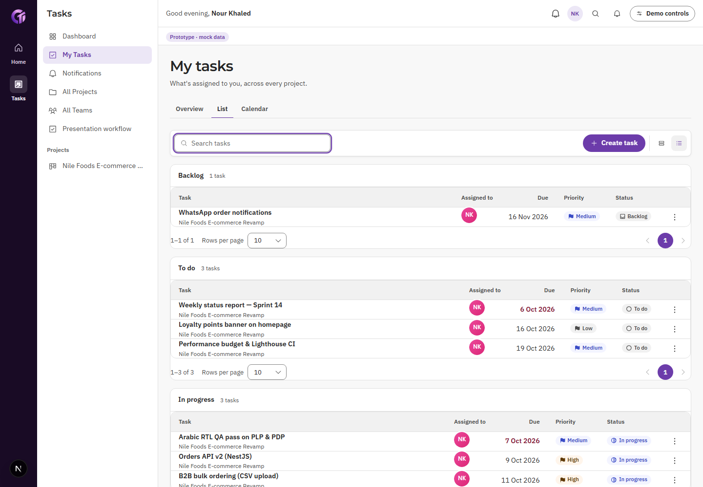

DS v2 · ordinary-screen specimens
Actual Tasks list, HR leave Sheet and Account Home. 24 authenticated UI/mock captures with functional, direction/theme, overflow and accessibility checks.

Actual Tasks list, HR leave Sheet and Account Home. 24 authenticated UI/mock captures with functional, direction/theme, overflow and accessibility checks.
